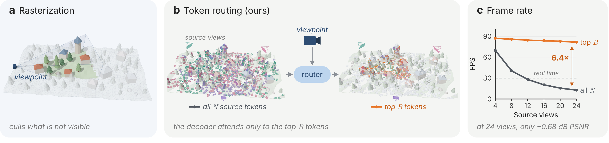
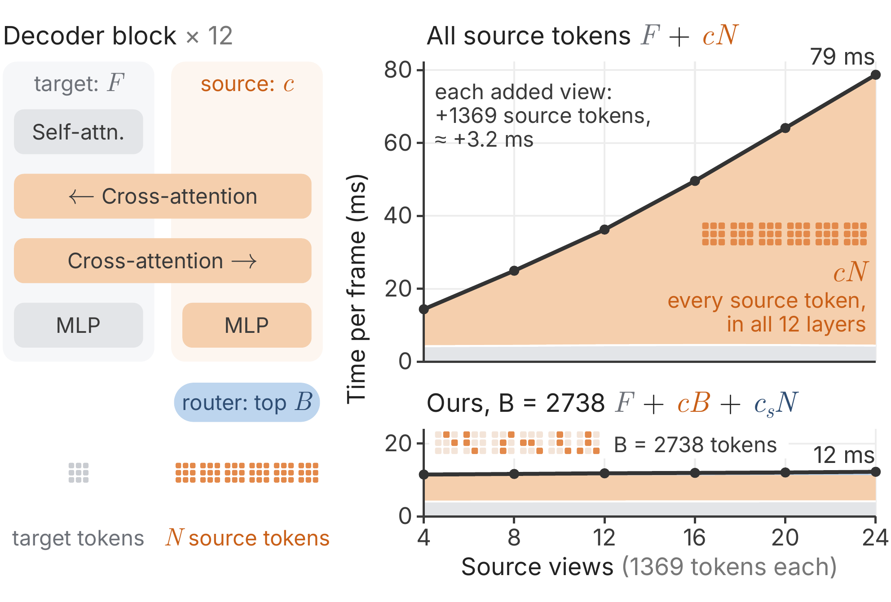
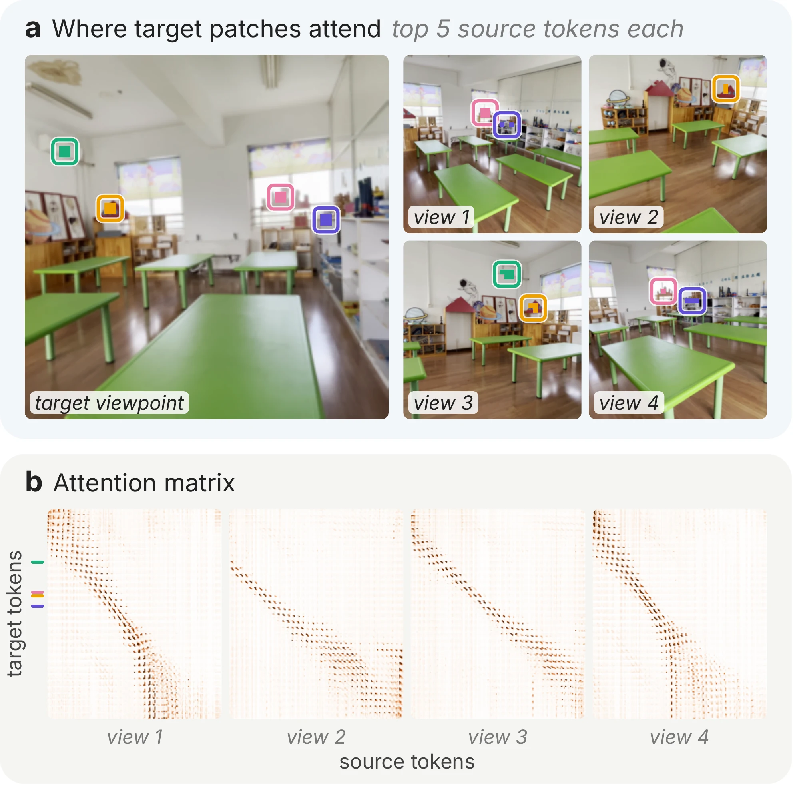
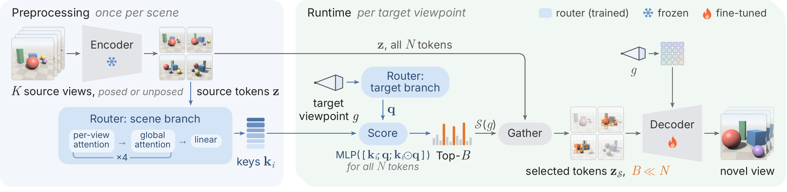
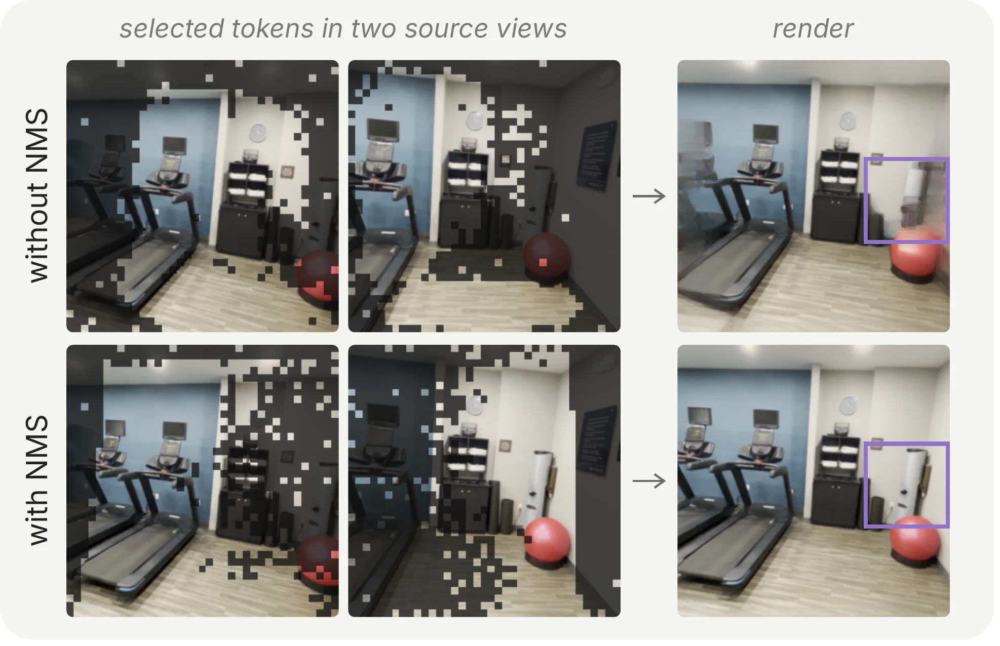
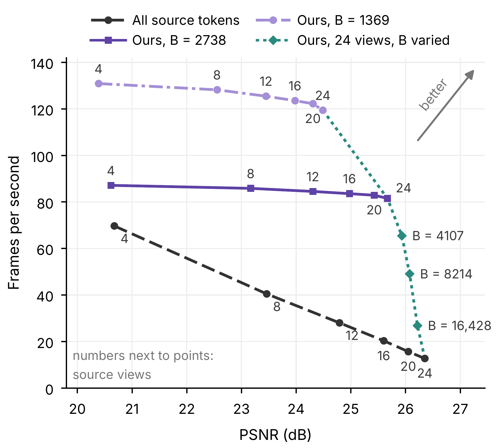
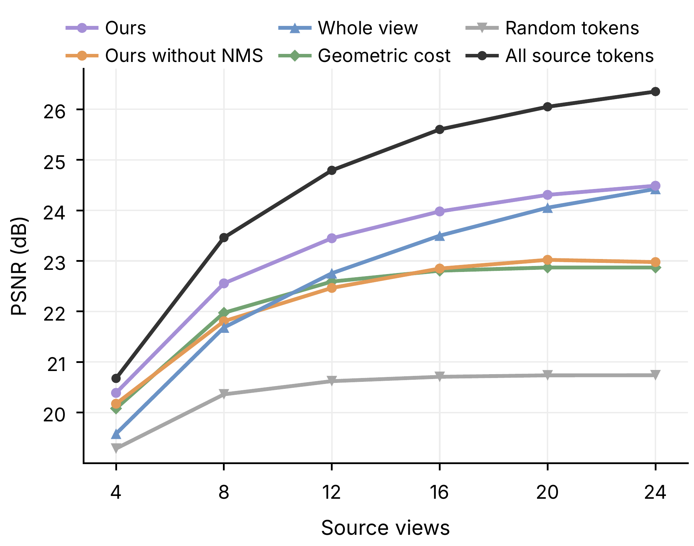
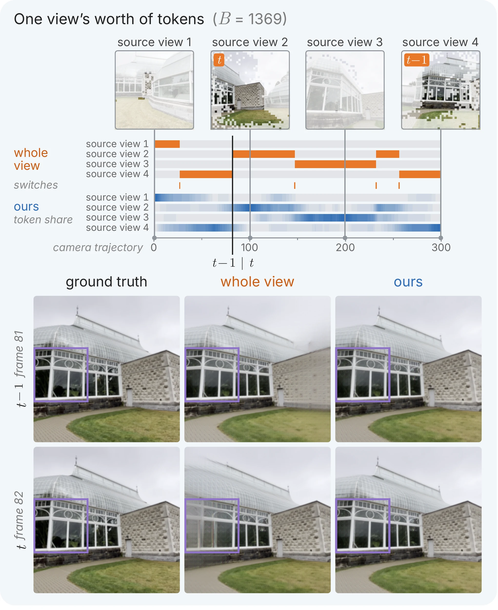

Novel views rendered by our model from 16 source views (DL3DV).
Transformer-based view synthesis models render each target viewpoint from the source images, without an explicit 3D representation, which lets them reproduce fine detail and view-dependent effects. However, their decoder attends to every source token for every frame, so rendering slows with each source image. Rasterization avoids this by culling primitives that the viewpoint does not see, but source tokens cannot be culled this way, as they have no explicit position or extent. Our key insight is that source tokens are nonetheless spatial anchors: each encodes a local region of the scene, so the decoder's attention for any viewpoint concentrates on a few of them. A lightweight router predicts these tokens from the source tokens and the viewpoint, and the decoder attends only to a fixed budget of top-ranked tokens, so its cost no longer depends on the number of source tokens. We supervise the router with the decoder's attention, using non-maximum suppression to demote redundant tokens. With 24 source images and two views' worth of tokens, our model renders 6.4 times faster than LagerNVS, at a PSNR only 0.68 dB lower. One ranking serves every budget, so the budget can change at render time.
A rasterizer discards the primitives that a viewpoint does not see, so its cost follows what is visible rather than the size of the scene. The decoder of a transformer-based view synthesis model has no such step: it attends to every source token for every frame, so rendering slows with each source view. Source tokens have no explicit position that could be tested against the viewpoint, but each of them encodes a local part of the scene. Our router predicts which of them the decoder needs, and the decoder attends only to those.

Panel b is an illustration. Panel c: frames per second at 256 × 256 on an RTX PRO 5000, for LagerNVS with all source tokens and for our model with two views' worth of tokens.
We profile the decoder of LagerNVS. The work on source tokens (orange) grows by 3.2 ms with every added source view, and with 24 source views it takes 94% of the 79 ms per frame. The work on the target image alone (gray) stays near 4 ms.
With a fixed budget of B source tokens, the time per frame barely depends on the number of source views. With two views' worth of tokens it is 12 ms at 24 source views, of which the router (blue) takes under 1 ms.
Time per frame at 256 × 256 on one RTX PRO 5000.

A target patch attends to the few source tokens that show the same part of the scene in each source view (a). This holds for every target patch of the viewpoint (b), so each source token acts as a local anchor in the scene.
Over the 140 test scenes of DL3DV, two views' worth of source tokens receive 85% of the decoder's attention with 24 source views, and which tokens these are changes from one viewpoint to the next.

We split the router into a scene branch and a target branch. The scene branch computes a key for every source token once per scene, attending within each source view and across all of them, and the keys are cached with the source tokens. For every target viewpoint, the target branch maps the viewpoint to a query, a score head scores all N keys, and the decoder attends only to the B top-scoring tokens. We adapt the pretrained decoder to these sparse subsets with low-rank updates, and with all tokens our model reduces exactly to LagerNVS.

We train the router to rank the source tokens by how much the frozen decoder attends to them for the target viewpoint. A surface seen in several source views receives attention in each of them, in the same part of the target image, so ranking by attention alone spends the budget on copies and leaves other parts uncovered.
Non-maximum suppression discounts each token by the overlap of its attention profile with those of the tokens already selected. The gains it records never increase, so the top B tokens are its selection for every budget B: one ranking serves every budget.

Routers trained without and with NMS select one view's worth of tokens on a target of DL3DV, all from the same 2 of its 8 source views (unselected tokens darkened). The box marks a region that the router without NMS leaves uncovered.
Each video follows a smooth path through the 16 source views of a test scene of DL3DV, rendered at 256 × 256 by our model fine-tuned with 16 source views. The whole view gives the decoder all tokens of the source view from which our router selects the most tokens in that frame, and parts of the scene vanish or appear whenever that view changes. Our router selects tokens for every frame.
Frame rates are measured on one RTX PRO 5000 with 16 source views, once the scene is encoded. The full viewer adds a simulated head motion and lets each panel show any of 11 budgets.
With two views' worth of tokens, the frame rate drops only from 87 to 82 FPS as the source views go from 4 to 24, while LagerNVS with all tokens drops from 70 to 13 FPS. With 24 source views, our model is 6.4 times as fast, at a PSNR 0.68 dB lower.

Frames per second against PSNR on the 140 test scenes of DL3DV, with 4 to 24 source views (numbers next to the points) spaced evenly over the first 300 frames of each scene and the same 228 target viewpoints per scene. B is the number of source tokens, 1,369 per view, that our decoder attends to per frame; teal shows increasing B at 24 views, up to all 32,856 tokens. Speed is measured at 256 × 256 on an RTX PRO 5000 and excludes the work done once per scene, such as encoding the source views.
Without input poses, our model with one view's worth of tokens renders higher quality than the feed-forward Gaussian splatting methods on all three benchmarks. Once their Gaussians are predicted, the splatting methods render many more frames per second.
| Method | PSNR ↑ | SSIM ↑ | LPIPS ↓ | FPS ↑ |
|---|---|---|---|---|
| RealEstate10K, 2 source views | ||||
| NoPoSplat* | 25.03 | 0.838 | 0.160 | 868 |
| SPFSplatV2* | 26.16 | 0.861 | 0.146 | 828 |
| YoNoSplat | 24.63 | 0.824 | 0.176 | 867 |
| WorldMirror | 22.74 | 0.792 | 0.208 | 847 |
| Ours, B = 1,369 | 27.27 | 0.865 | 0.142 | 41 |
| LagerNVS, B = N | 27.61 | 0.872 | 0.136 | 34 |
| CO3D, 9 source views | ||||
| YoNoSplat | 22.08 | 0.715 | 0.388 | 493 |
| WorldMirror† | 21.12 | 0.712 | 0.393 | 527 |
| Ours, B = 1,369 | 25.45 | 0.775 | 0.297 | 42 |
| Ours, B = 2,738 | 26.04 | 0.784 | 0.282 | 33 |
| Ours, B = 4,107 | 26.18 | 0.787 | 0.278 | 29 |
| LagerNVS, B = N | 26.43 | 0.793 | 0.271 | 17 |
| Mip-NeRF 360, 9 source views | ||||
| YoNoSplat | 18.67 | 0.439 | 0.525 | 504 |
| WorldMirror | 17.71 | 0.418 | 0.502 | 498 |
| Ours, B = 1,369 | 19.99 | 0.484 | 0.426 | 42 |
| Ours, B = 2,738 | 20.32 | 0.494 | 0.410 | 33 |
| Ours, B = 4,107 | 20.40 | 0.496 | 0.407 | 29 |
| LagerNVS, B = N | 20.65 | 0.503 | 0.402 | 18 |
RealEstate10K uses the NoPoSplat split, scored at 256 × 256; CO3D and Mip-NeRF 360 use the ReconFusion splits, scored at 512 × 512. Every method estimates and refines the target pose. *Numbers from the papers. †Trained on CO3D. Ours builds on the general model of LagerNVS and reduces to it with all tokens (gray); 1,369 tokens are one view. FPS counts target viewpoints rendered per second on one RTX PRO 5000 once the scene is encoded, with the fastest renderer that reproduces each splatting method's images. Colors mark the best, second and third entry in each quality column of each block, excluding the gray rows.
With input poses on DL3DV, every budget renders above DepthSplat and CLiFT, and three views' worth of tokens is within 0.21 dB of all tokens.
| 4 source views | 6 source views | |||||
|---|---|---|---|---|---|---|
| Method | PSNR ↑ | SSIM ↑ | LPIPS ↓ | PSNR ↑ | SSIM ↑ | LPIPS ↓ |
| DepthSplat 256×256 | 22.39 | 0.767 | 0.186 | 23.56 | 0.813 | 0.151 |
| DepthSplat 256×448* | 23.06 | 0.786 | 0.172 | 23.87 | 0.821 | 0.147 |
| CLiFT 256×448* | 23.42 | 0.754 | 0.203 | 24.78 | 0.798 | 0.166 |
| Ours, B = 1,369 | 26.79 | 0.857 | 0.105 | 28.22 | 0.889 | 0.082 |
| Ours, B = 2,738 | 27.41 | 0.867 | 0.096 | 29.18 | 0.901 | 0.070 |
| Ours, B = 4,107 | 27.48 | 0.869 | 0.095 | 29.28 | 0.903 | 0.069 |
| LagerNVS, B = N | 27.60 | 0.871 | 0.094 | 29.49 | 0.906 | 0.068 |
The DepthSplat split of DL3DV (140 scenes). All methods are scored on the central square of each frame, resized to 256 × 256; subscripts give the input resolution. *These inputs cover 1.66 times (DepthSplat, at 0.95 times the height) and 1.75 times (CLiFT) the width of our crops. With all N tokens, our model reduces to LagerNVS (gray). Colors mark the best, second and third entry in each column, excluding the gray row.
With one view's worth of tokens, our router renders better than a geometric cost computed from predicted depth (by 1.62 dB with 24 source views), than routing without NMS and than random tokens. Whole source views fall behind with few source views and catch up only with many.

PSNR with one view's worth of source tokens (B = 1,369) on the 140 test scenes of DL3DV, with 4 to 24 source views spaced evenly over the first 300 frames and the same 228 target viewpoints per scene. Each strategy renders through a decoder adapted to its own selections in the same way as ours, and LagerNVS attends to all source tokens.
Whole views are all or nothing: whenever the selected view changes, parts of the scene vanish or turn translucent. Our router shifts its tokens between views gradually.

Switching source views along a 300-frame trajectory, with four source views captured at the vertical lines. The whole view (orange) is the source view from which our router selects the most tokens; blue lanes show the share of our router's tokens from each view. At the marked switch, the boxed content turns translucent with the whole view, while our router keeps 95% of its tokens.
@misc{ghosh2026tokenslocalitypreservinganchorsscalable,
title={Tokens as Locality-Preserving Anchors: Scalable Novel View Synthesis with Target-Adaptive Token Routing},
author={Sagnik Ghosh and Aswin C. Sankaranarayanan},
year={2026},
eprint={2611.31156},
archivePrefix={arXiv},
primaryClass={cs.CV},
url={https://arxiv.org/abs/2611.31156},
}